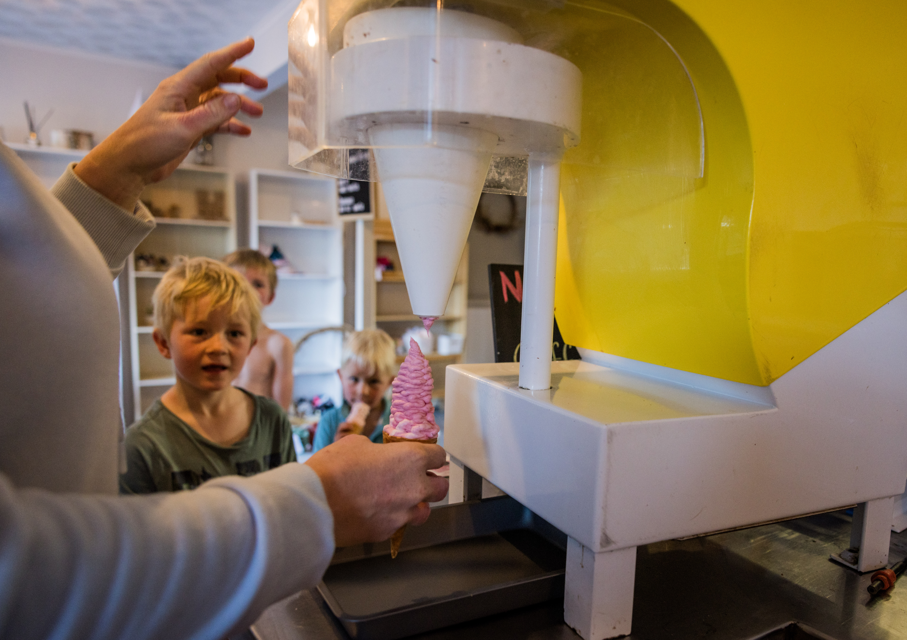

Behind Fairfield Berries
Our Story
Meet Patrick and Elise, the people behind Fairfield Berries.
Story text and final portrait to be confirmed with Elise.


Fresh and frozen fruit, real fruit ice cream and more at Fairfield Berries.
Explore what we offer →Four things to explore at the farm.


Meet Patrick and Elise, the people behind Fairfield Berries.
Story text and final portrait to be confirmed with Elise.
A look at berry picking and the farm. Picking options change with the season.


Swipe to see more
Browse fresh and frozen berries, real fruit ice cream and other products. More shop photographs to come.

Swipe to see more
Opening hours, address and current picking availability will be added once confirmed.